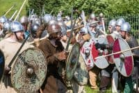
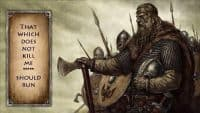
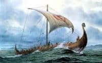
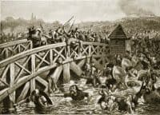
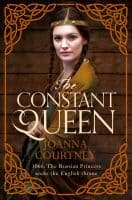

The Battle of Stamford Bridge – history’s least celebrated victory
Everyone knows about the Battle of Hastings - it’s seared on

to our national memory with such heat that we can never get it out – but what of the Battle of Stamford Bridge? You need to have really looked into the 1066 period to have heard of that one but it was a huge battle which could have had very far-reaching consequences for England. It is also an amazing story.On the one side was Harald Hardrada, 51-year-old Viking warrior and probably the most famed fighter in all of Christendom. This is a man who had only ever lost one significant battle – his first. It was at Stiklestad in Norway in 1030 and he was 15. Cnut’s forces defeated those of Harald’s half-brother King Olaf in a battle that was, amazingly, fought half in the pitch black as it coincided with a solar eclipse. We can only imagine what evil forces the participants thought were operating upon them but Cnut’s men seem to have weathered the darkness more effectively. Olaf was killed and Harald, badly injured, had to hide beneath a bush to avoid execution. He was rescued a day later and apparently hidden over the winter in a nearby peasant’s house to recover enough to follow the others into exile in Russia.
Harald never lost the desire to win back Norway but Cnut was a force to be reckoned with and he knew he would need both money and a strong reputation as a leader to persuade enough men to stand and fight with him. He therefore spent the next 10 years as a ‘hired sword’ both for Grand Prince Yaroslav in Russia and for the Empress Zoe in Byzantium. A brave, daring and inspirational warrior, he led many hugely successful campaigns in the Greek seas, helped the Empress survive a coup, secured a high position in the famed ‘Varangian guard’ and became the man to fight for. He also became exceedingly rich. When he did, eventually return to Norway in 1045 his nephew Magnus, who had snuck in and nicked the throne from under him when Cnut died, had little choice but to cede part control. Two years later Magnus was dead and Harald was King of Norway.
Harald spent much of his time trying to seize Denmark. No doubt he aspired to being an Emperor of the North like Cnut had been before him and Denmark was the first stop. He didn’t ever manage it due to the wiles of King Swein but in 1066 a new – and altogether more enticing – country came up for grabs: England.

Harald was not an old-style Viking in that he was a Christian and therefore, theoretically at least, frowned on the whole rape-and-pillage approach of his ancestors. He was still, however, every bit as adventurous and fierce as tradition dictated and men flocked to his banner once he’d announced his intention of invading. He sailed out of the mouth of the Sognafjord - gathering point for so many Viking adventures west – with 300 ships at his back, all packed with fierce warriors champing for a chance to conquer England. Or, rather, to conquer England again, for Cnut had done it in 1017 and had ruled in peace for nearly 20 years before his untimely death in 1035. Many men in England had Norse blood, especially in the north and east and Harald’s chances of success were high. If you’d been a betting man back in the summer of 1066 you’d certainly have been putting your silver pennies on Harald Hardrada.On the other side was another Harold – King Harold, also known as Harold Godwinson or Harold of Wessex. This was a man without an ounce of royal blood in his veins whose father, son of a small time thegn, had scrambled his way to the topmost earldom in the country as Cnut’s right-hand man, dragging his family up with him. Not that Harold was a poor choice. He’d been Earl of East Anglia since 1043 and then Earl of Wessex from his father’s death in 1053 and was a highly experienced commander. He’d led armies on many occasions, including a triumphant invasion of Wales in 1062, and his family controlled the whole of the south of England. For several years leading up to 1066 he’d been named in official documents as ‘sub-regulus’ (under-king) and there was no man better qualified to hold England firm against the inevitable invaders. It was going to be a tough fight.

The news of the Norwegian Harald’s invasion must have been sent to English Harold when ships were first sighted off the east coast but he had no time to get there before Harald Hardrada (Hard-ruler or Ruthless) attacked at Gate Fulford. Defence was left to the northern lords Edwin and Morcar – brothers to King Harold’s wife Edyth- but it did not go well for the two young men. So fierce was the fighting in this huge battle that it was said the victorious Norwegians could cross the boggy land on the many bodies of the fallen. To be fair, quite a few of these were Norwegian as well as English but by the end of the day the lords had fled and York was there for the invaders to take. At the time, it must have looked like a mirror-image of Cnut’s conquest in 1017, which started in the north and marched relentlessly on Westminster.But it was not to work out quite like that and this is where the story becomes the stuff of legend. It seems Harald Hardrada, for some unknown reason, abandoned the cautious and disciplined leadership with which he’d won so many fights before, allowing his men to await the delivery of hostages (customary practice in a surrender) with their armour off. It was apparently a very hot day and they had marched 12 miles from their ships at Ricall with all their equipment, but it still seems a reckless and arrogant thing for the great Viking to do. Yes, he was only expecting a cowed group of local lords but the Vikings had built their reputation on being perpetually ready for war. That day, however, September 25th, at the pretty little crossing of the Derwent known as Stamford Bridge, Harald Hardrada was not ready and he paid for it.
If Stamford Bridge is a legend then King Harold is the hero. This is a man who had been camped out on the southern shore of England for months waiting for Duke William of Normandy to invade. He had only just disbanded the troops, in the face of terrible weather in the Narrow Sea and an urgent need to get the harvest in, when news came of the attack in the north. He did not hesitate but mounted his horse in London and, with his core force of housecarles, rode for York, collecting more troops at muster-points on the way. He made the 200-mile journey in just a few days (The Battle of Gate Fulford was on Sep 20th and Stamford Bridge on the 25th, though he must have already been on his way before Fulford) and did it without the Norwegians getting wind of their approach. Harold arrived at Tadcaster on the night of September 24th and apparently passed all his troops through York in silence to spring a trap on the Vikings the next day. And it worked.
The Vikings should have won at Stamford Bridge. They were a huge force of experienced and well-equipped men who had already secured one great victory. But Hardrada only took about 2/3 of his men, leaving the rest at the ships and, as mentioned above, he allowed them to sit around sunning themselves as they awaited the hostages. What arrived, instead, was King Harold’s army. There are many stories around what happened at the start of the battle and in particular many reports of parleys involving suitably dramatic insults, such as English Harold offering Norwegian Harald 7-ft of English soil on account of his great height. These may or may not have taken place but the spirit of them is engaging.

What probably did take place, at least to some extent, was a single Viking holding the bridge against challengers for some time – long enough for the Norwegians to muster a passable shield wall to face their surprise foe. This brave warrior was famously taken out by a spear from under the bridge and died a Viking hero. Certainly his stand remains the most favoured part of the Stamford Bridge story. His death, however, was in vain for though the Vikings fought for the long hours that allowed their reinforcements to make it from the ships, those men were worn out from running 12 miles in full armour. At some point Harald Hardrada, feared warrior and great king, took an arrow in his throat and died. The Viking defence collapsed and King Harold of England had won himself a truly amazing victory.This is a battle that deserves to be the subject of every ballad, romance tale and heroic epic ever to have passed down to us from the Anglo-Saxon period. The only reason it is not is because just days after, barely before the celebration ale had been broached, news came of a second invasion – by Duke William. Poor, heroic Harold was forced to turn around and march back the 200 miles to London and then a further 100 to Hastings where he was wiped out as both a hero and a man.

What happened at the Battle of Hastings is, as discussed at the start of this, well known but Harold so nearly won that battle too and I think we can safely say that had he not had to deal with Hardrada, he would most likely have done so. It is his tragedy that his stunning and dramatic victory at Stamford Bridge was overshadowed to such an extent by Hastings and the ensuing Norman rule that very few of us know of it now. I hope that my novel, The Constant Queen, can change that.